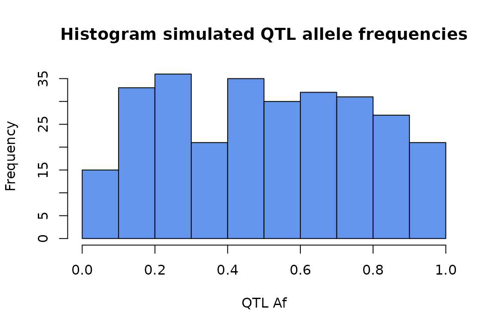
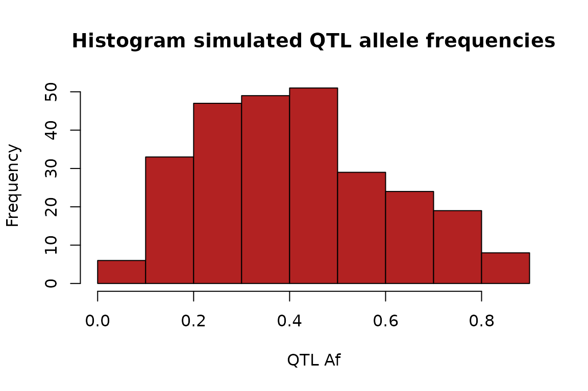
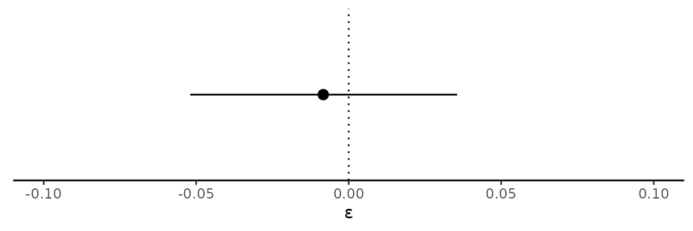
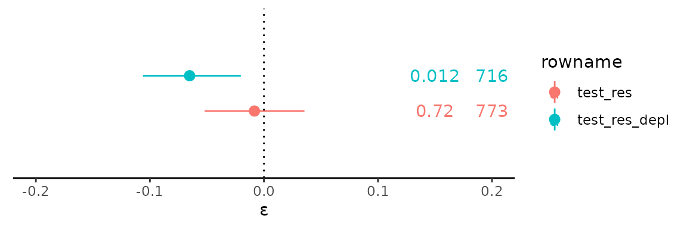

`stampen` Usage Vignette
Jonah Einson
1/5/23
simulation_vignette.Rmd
library(stampen)
library(dplyr)
#>
#> Attaching package: 'dplyr'
#> The following objects are masked from 'package:stats':
#>
#> filter, lag
#> The following objects are masked from 'package:base':
#>
#> intersect, setdiff, setequal, union
library(ggplot2)stampen is a package used to simulate haplotype
configuration data from large phased WGS cohorts, and test for
non-random depletion of QTL-coding variant haplotypes using the
Poisson-binomial distribution. This non-random depletion can be
indicative of a selective effect which favors haplotypes in
non-deleterious configurations. This phenomenon is known as “modified
penetrance.”
TLDR
A very quick overview of this tool’s functionality, for the lazy.
# Generate some null haplotypes
test_data <-
simulate_null_haplotypes(
n_indvs = 500, n_genes = 500,
qtl_alpha = 1, qtl_beta = 1 # controls the qtl allele frequency distribution
# based on a Beta
)
# Characterize the haplotypes as high or low penetrance
test_data_incl_beta <-
characterize_haplotypes(
test_data, beta_config = beta_config_sqtl
)
head(test_data_incl_beta)
#> gene indv haplotype sqtl_af beta hom exp_beta
#> 1 gene5 indv245 AbaB 0.773 0 FALSE 0.5000000
#> 2 gene6 indv228 ABAb 0.674 0 TRUE 0.8104083
#> 3 gene6 indv241 ABab 0.674 1 FALSE 0.5000000
#> 4 gene6 indv246 ABAb 0.674 0 TRUE 0.8104083
#> 5 gene6 indv309 ABAb 0.674 0 TRUE 0.8104083
#> 6 gene6 indv375 ABAb 0.674 0 TRUE 0.8104083
# Run the Poisson-binomial bootstrap test
bootstrap_test(test_data_incl_beta, B = 1000)
#> bootstrap_p epsilon lower upper n_haplotypes
#> 0.922000000 0.002546359 -0.039555247 0.049623976 725.000000000Simulating Data
In this vignette, we demonstrate how to simulate some haplotype data
with the stampen package, then test to see if is enriched
for haplotypes that reduce variant penetrance.
First, we simulate a dataset of haplotypes with from 500 individuals,
and 500 genes that may carry rare variants. The
simulate_null_haplotypes function generates data where
haplotypes in low penetrance and high penetrance configurations are
equally likely to occur. By default, we draw allele frequencies from a
uniform distribution, but this can be adjusted by setting the
qtl_alpha and qtl_betaparameters.
set.seed(1234567890)
test_data <- simulate_null_haplotypes(
n_indvs = 500, n_genes = 500,
qtl_alpha = 1, qtl_beta = 1) # leave the default hyperparameters
head(test_data)
#> gene indv haplotype qtl_af
#> 1 gene1 indv462 abaB 0.135
#> 2 gene2 indv126 ABab 0.187
#> 3 gene2 indv177 aBab 0.187
#> 4 gene2 indv215 aBab 0.187
#> 5 gene2 indv268 abaB 0.187
#> 6 gene2 indv339 abaB 0.187The haplotype column will be discussed further down.
In the default configuration, the QTL allele frequency is uniform.
test_data %>% select(gene, qtl_af) %>%
unique %>% .$qtl_af %>%
hist(main = "Histogram simulated QTL allele frequencies",
xlab = "QTL Af",
col = "cornflowerblue")
We can also adjust the beta distribution parameters to simulate data that arises from any allele frequency distribution that may occur among different sets of QTLs, or populations.
# Use this built in function to quickly visualize different theoretical allele
# frequency distributions, paramterized by
stampen:::beta_plotter(a = 2, b = 3)
set.seed(128)
test_data_2 <- simulate_null_haplotypes(n_indvs = 500, n_genes = 500,
qtl_alpha = 2, qtl_beta = 3) # new hps
test_data_2 %>% select(gene, qtl_af) %>%
unique %>% .$qtl_af %>%
hist(main = "Histogram simulated QTL allele frequencies",
xlab = "QTL Af",
col = "firebrick")
Haplotype configuration designations
Let’s take a look at the built in haplotype configurations, which we consider “high-penetrance” or “low-penetrance.” In a haplotype configuration analysis, an important first step is to hypothesize whether higher expression of a nonmutated allele, or lower inclusion of a mutated allele is what drives modified penetrance. Testing for either is a decision one needs to make. These designations can be adjusted easily by the user.
data('beta_config_sqtl')
beta_config_sqtl
#> abAB ABab abaB aBab AbaB aBAb AbAB ABAb
#> 1 1 1 1 0 0 0 0
data('beta_config_eqtl')
beta_config_eqtl
#> abAB ABab abaB aBab AbaB aBAb AbAB ABAb
#> 0 0 1 1 1 1 0 0In the sQTL hypothesis configuation, a represents a high
exon inclusion alelle, and A represents a low inclusion
allele. (In the eQTL model, A is a highly expressed allele,
and a is the lowly expressed allele). Therefore, under the
sQTL model, an observation of the haplotype abAB means an
individual is heteryzous for an sQTL, and carries a rare coding variant
on the highly included allelic copy. This configuration is assigned a
1 becuase under this model, this configuration results in
increased penetrance of the coding variant, with respect to the opposite
configuration AbaB, where the coding variant is now on the
lower included allele, and has reduced penetrance. (See figure 1 of
Einson et. al. 2023)
Next, we use the function characterize_haplotypes to add
two columns to a data frame of haplotypes. The new columns are.
-
beta: Represents a high penetrance (1) or low
penetrance (0) configuration, which is defined by the input
beta_config. - hom: Boolean. Is this individual homozygous for the QTL allele?
-
exp_beta: When hom ==
TRUE, this is calculated assqtl_af^2 / (sqtl_af^2 + (1 - sqtl_af^2)). Whenhom==TRUE, i.e. the haplotype is hetorozygous, we assign 0.5. In practice,sqtl_afis the allele frequency of the penetrance driving allele. For sQTLs, this is the frequency of the high exon inclusion alelle, and for eQTLs, this is the allele frequency of the lower expressed allele.
test_data_incl_beta <-
characterize_haplotypes(test_data, beta_config = beta_config_sqtl)
head(test_data_incl_beta, 20)
#> gene indv haplotype sqtl_af beta hom exp_beta
#> 1 gene1 indv462 abaB 0.135 1 TRUE 0.02377846
#> 2 gene2 indv126 ABab 0.187 1 FALSE 0.50000000
#> 3 gene2 indv177 aBab 0.187 1 TRUE 0.05024729
#> 4 gene2 indv215 aBab 0.187 1 TRUE 0.05024729
#> 5 gene2 indv268 abaB 0.187 1 TRUE 0.05024729
#> 6 gene2 indv339 abaB 0.187 1 TRUE 0.05024729
#> 7 gene2 indv345 abAB 0.187 1 FALSE 0.50000000
#> 8 gene2 indv484 abaB 0.187 1 TRUE 0.05024729
#> 9 gene5 indv91 abaB 0.064 1 TRUE 0.00465353
#> 10 gene5 indv206 abaB 0.064 1 TRUE 0.00465353
#> 11 gene5 indv269 aBab 0.064 1 TRUE 0.00465353
#> 12 gene5 indv366 aBab 0.064 1 TRUE 0.00465353
#> 13 gene6 indv465 aBab 0.117 1 TRUE 0.01725407
#> 14 gene8 indv69 aBab 0.341 1 TRUE 0.21120419
#> 15 gene8 indv152 aBab 0.341 1 TRUE 0.21120419
#> 16 gene8 indv208 ABab 0.341 1 FALSE 0.50000000
#> 17 gene8 indv287 ABab 0.341 1 FALSE 0.50000000
#> 18 gene8 indv293 abAB 0.341 1 FALSE 0.50000000
#> 19 gene8 indv480 abaB 0.341 1 TRUE 0.21120419
#> 20 gene10 indv7 ABAb 0.721 0 TRUE 0.86976185Test for depletion of high penetrance haplotypes
Now use the calculate_epsilon and
bootstrap_test functions to calculate depletion, which we
call epsilon, and get the significance of this depletion.
calculate_epsilon(dataset = test_data_incl_beta)
#> [1] -0.008338446
test_res <- bootstrap_test(test_data_incl_beta, B = 1000)
test_res
#> bootstrap_p epsilon lower upper n_haplotypes
#> 0.720000000 -0.008338446 -0.051953185 0.035550769 773.000000000
# Make a nice figure
ggplot(data.frame(t(test_res)),
aes(y = epsilon, x = "baseline", ymin = lower, ymax = upper)) +
geom_pointrange() +
geom_hline(yintercept = 0, lty = 3) +
ylim(-.1, .1) +
ylab("ε") +
theme_classic() +
theme(axis.text.y = element_blank(),
axis.title.y = element_blank(),
legend.position = "none") +
coord_flip() +
theme(axis.ticks.y = element_blank(),
axis.text.y = element_blank(),
axis.line.y = element_blank())
Now as a demonstration, let’s remove some “high penetrance” haplotypes to show how sensitive the test is for detecing this signal.
idx <- which(test_data_incl_beta$beta == 1)
idx.removed <- sample(idx, .15 * length(idx), replace = F)
test_data_incl_beta_depleted <- test_data_incl_beta[-idx.removed,]
test_res_depl <- bootstrap_test(test_data_incl_beta_depleted)
plt <- data.frame(rbind(test_res, test_res_depl))
plt <- tibble::rownames_to_column(plt)
n_pos = .2; pval_pos = .15
ggplot(plt,
aes(y = epsilon, x = "baseline", col = rowname, ymin = lower, ymax = upper)) +
geom_pointrange(position = position_dodge(.5)) +
geom_hline(yintercept = 0, lty = 3) +
ylim(-.2, .2) +
ylab("ε") +
# The P-value label
geom_text(mapping = aes(y = pval_pos, label = bootstrap_p),
position = position_dodge(width = .5)) +
# The N-sample label
geom_text(mapping = aes(y = n_pos, label = prettyNum(n_haplotypes, big.mark = ",")),
position = position_dodge(width = .5)) +
theme_classic() +
theme(axis.text.y = element_blank(),
axis.title.y = element_blank()) +
coord_flip() +
theme(axis.ticks.y = element_blank(),
axis.text.y = element_blank(),
axis.line.y = element_blank())